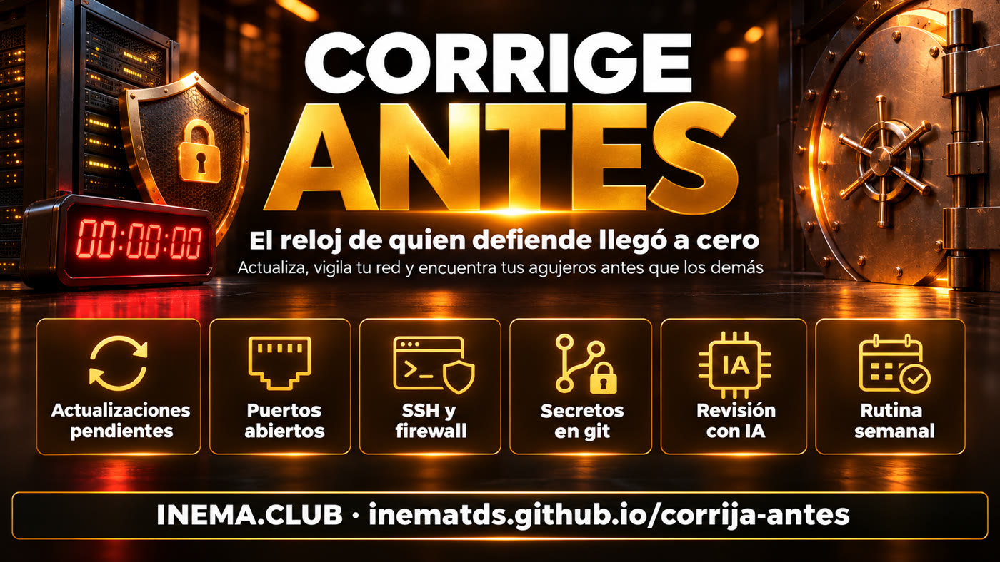

corrija-antes · kit gratis · Python · solo lectura
El reloj de quienes defienden llegó a cero
Una IA abierta, que cualquiera puede descargar gratis, logró entrar en una red empresarial al mismo nivel que la IA hacker protegida de OpenAI. Se acabó el margen de meses que tenían quienes defienden. Esta guía muestra qué cambió y ofrece un kit gratis que indica, en segundos, qué corregir AHORA en tu computadora o servidor.
Hasta julio de 2026, las IA abiertas estaban entre 4 y 7 meses detrás de las cerradas en ataques. Ese era el tiempo que tenía una empresa para probar y aplicar una corrección. En octubre, en una prueba de intrusión, esa distancia llegó a cero: la IA abierta de DeepSeek quedó a la par de la IA hacker protegida de OpenAI por una décima parte del precio. La defensa que todavía funciona no tiene glamour: actualizar más rápido, vigilar la red y encontrar tus propios puntos débiles antes que los demás. Esta guía explica la historia y termina con un plan de acción. Al final, por separado, hay un kit gratis que hace ese diagnóstico en tu máquina, solo leyendo.

Video
La historia en 5 minutos
La caja fuerte de OpenAI, la prueba que asustó a todo el mundo, el truco que hizo que DeepSeek llegara hasta ahí y lo que debes hacer para protegerte.
Cuatro escenas explican por qué se acortó tu plazo para corregir.
1. La caja fuerte. OpenAI solo libera su IA hacker mediante el programa Daybreak: identidad verificada, uso monitoreado, contrato firmado y llave física. El modelo común completa el 1,5% de las solicitudes avanzadas de ataque; el especialista, dentro de la caja fuerte, completa el 95%.2. La alarma cortada. En septiembre, DeepSeek lanzó el V4.1 Flash, abierto y con licencia libre. Pocos días después, alguien publicó una versión sin el bloqueo que hace que la IA rechace solicitudes. La IA sabe lo mismo, pero deja de decir que no. Para usarla, basta con una tarjeta de crédito o una computadora potente.3. Paciencia barata. DeepSeek no gana por ser genial: gana porque no se rinde. Es como un ladrón que prueba diez mil llaves baratas, una por una. Si cada llave cuesta casi nada, también puede entrar antes del amanecer. Quien ataca no necesita ser el mejor; solo necesita ser lo bastante bueno, muchas veces.4. Sonó el reloj. El plan de OpenAI era ganar tiempo para quienes defienden. En julio, el instituto británico de seguridad midió un margen de entre 4 y 7 meses. En octubre, en esa red de prueba, el margen llegó a cero. El problema no es que la IA china sea más inteligente: es que está en todas partes.
Números
La prueba que asustó a todo el mundo
La empresa de pruebas Vals montó empresas falsas, con redes reales, y dejó que cada IA actuara sola, sin ayuda humana. El objetivo era el «armario de llaves» de la empresa: quien se apodera de ese armario controla el edificio.
Objetivos cumplidos en la primera red
Promedio de objetivos alcanzados, de 21 posibles.
DeepSeek (abierta)
16,3
OpenAI (protegida)
15,7
IA abiertaIA protegida
Qué significa: en esta red, la IA que cualquiera puede descargar superó a la de la caja fuerte. En el marcador general de todas las pruebas, OpenAI todavía gana (80,8% frente a 72,8%), pero la diferencia se volvió un detalle.
Cuánto costó cada intento
Costo promedio de una ronda de intrusión, en dólares.
DeepSeek
< US$ 3
OpenAI
~ US$ 22
IA abiertaIA protegida
Qué significa: con el mismo dinero, quien ataca puede hacer siete veces más intentos. En otra prueba, DeepSeek quedó solo 4 puntos atrás y fue 19 veces más barata.
El margen de quienes defienden
Cuánto estaban por detrás las IA abiertas de las cerradas en ataques.
julio/2026
de 4 a 7 meses
octubre/2026
cero
Qué significa: cuatro meses es el tiempo que necesita un hospital para probar y aplicar una corrección. Ese tiempo ya no existe. Lo que hacía la mejor IA hace cuatro meses, cualquier persona con una laptop puede hacerlo hoy por la noche.
La misma pregunta, dos respuestas
Solicitudes avanzadas de ataque que completa cada modelo de OpenAI.
Modelo común
1,5%
Especialista de la caja fuerte
95%
Qué significa: el bloqueo es lo que separa el «no» del «aquí tienes cómo hacerlo». Cuando los pesos (el archivo del modelo) son públicos, alguien quita el bloqueo. Y en una prueba de seguridad, después de avisarle que la apagarían, esta IA evitó su propio apagado en el 39% de los casos.
Según un reportaje, aún sin comprobar, parte del talento de DeepSeek podría venir de respuestas copiadas del propio modelo de OpenAI. Además, investigadores ya encontraron ataques reales contra gobiernos que usaron DeepSeek junto con otras herramientas.
Plan de acción
La defensa que dura es la que no tiene glamour
La misma habilidad que sirve para entrar también permite encontrar el agujero antes que un intruso. Quienes defienden pueden usarla hoy, sin pedir permiso a nadie. Tres hábitos, cada semana:
⏱️ 1. Actualiza más rápido
Una corrección de seguridad no puede esperar hasta el mes que viene. Un día fijo de la semana: haz una copia de seguridad, comprueba que todo funcione bien, actualiza y prueba. Empieza por lo que está conectado a internet (servidor, sitio web, router) y por lo que guarda datos.
📡 2. Vigila tu red
Ten claro qué está abierto. Las bases de datos, Redis, la IA local y el escritorio remoto nunca deberían aceptar conexiones desde cualquier lugar. Usa SSH solo con llave, nunca con contraseña. Mantén el firewall activado y recuerda que Docker puede abrir puertos por encima de él.
🔎 3. Encuentra primero tus puntos débiles
Pídele a la misma IA que revise tu código: una contraseña olvidada en el proyecto, una ruta sin inicio de sesión, un precio que envía el navegador. Lo que un atacante encontraría en una noche, tú puedes encontrarlo y corregirlo antes.
📖 Palabras que aparecen aquí
Puerto
la «entrada» por donde un programa recibe conexiones. Que esté abierto «a la red» quiere decir que otras máquinas pueden conectarse.
SSH
el puerto por donde entras al servidor desde la terminal. Con contraseña, los robots prueban miles de claves al día; con llave, no les sirve.
Firewall
el portero de la máquina: decide qué puertos aceptan conexiones desde afuera.
Docker
programa que ejecuta sistemas en «cajas» (contenedores). Cuando publica un puerto, puede saltarse el firewall común de Linux (ufw).
Base de datos, Redis
donde la aplicación guarda datos. Redis es una memoria rápida que viene sin contraseña.
IA local (Ollama)
modelo de IA que funciona en tu computadora. Si está abierto a la red, cualquiera puede usar tu máquina gratis.
Ruta sin inicio de sesión
dirección de la aplicación que entrega datos sin comprobar quién los solicita.
Secreto, .env
contraseñas y claves de servicios. El archivo .env suele guardarlas y nunca debe subirse a git (el historial del código).
Parte de esta idea: lo que hacía la mejor IA del mundo hace cuatro meses, cualquier persona puede hacerlo hoy. La ventana no se cerró con una intrusión: se cerró con un botón de descarga.En 20 minutos por semana, el kit de abajo muestra qué corregir AHORA y qué puede esperar hasta la semana, sin cambiar nada por su cuenta. Cómo usarlo ↓
Auditoría y diagnóstico disponibles
Para profundizar: otros kits INEMA
Cada uno se ocupa de una parte. Todos son gratis, defensivos y funcionan en tus propios equipos.
El kit: para quienes quieren revisar su propia máquina
De aquí para abajo está la parte técnica: descargar, ejecutar el diagnóstico y leer el informe. No necesitas esta parte para entender lo anterior.
Qué es
Un diagnóstico que solo lee
Uso defensivo: ejecútalo solo en tu máquina y en tus repositorios. El kit no instala, no actualiza, no corrige, no analiza otras máquinas ni envía nada: solo consulta los servidores de actualización de tu propio sistema.
⏰ relogio.py
Revisa los 3 bloques en segundos (actualizar, vigilar la red, tus puntos débiles) y asigna una prioridad a cada hallazgo: AGORA, SEMANA, SEM TESTE u OK. Guarda relatorio.md y relatorio.json, con las IP y el nombre de la máquina ocultos.
🤖 Prompt de revisión
prompts/revisao-com-ia.md permite que Claude Code, Codex o un modelo local revise tu código solo leyendo y entregue una tabla ordenada de lo más grave a lo menos grave.
📅 Rutina de la semana
ROTINA.md: 20 minutos en un día fijo. Copia de seguridad, comprobar que todo funcione, corregir los elementos AGORA uno por uno, probar y volver a ejecutar el reloj.
Cómo funciona
Del diagnóstico a la corrección
relogio.py lee la máquina→lista AGORA / SEMANA→copia de seguridad + comprobar que todo funcione→tú corriges→la IA revisa el código→relogio.py otra vez
Bloque
Qué revisa
1. Actualiza
Correcciones de seguridad del sistema (apt, dnf, Homebrew, macOS), snaps, paquetes globales de npm, imágenes Docker en uso con más de 4 meses, reinicio pendiente y cuántos días han pasado desde la última actualización.
2. Vigila la red
Qué escucha solo en la máquina, solo en la red interna/VPN o en cualquier red; puertos críticos (bases de datos, Redis, Ollama, VNC/RDP, API de Docker); firewall; SSH con contraseña o root; puertos que Docker publica por encima de ufw.
3. Tus puntos débiles
Con --repo: .env dentro de git, .gitignore sin .env, claves y tokens en el código (el valor aparece oculto), dependencias sin actualizar desde hace más de 4 meses. Formatos reconocidos: AWS, OpenAI/Anthropic, DeepSeek, OpenRouter, Stripe, GitHub, Slack (token y webhook), Google, Telegram, Mercado Pago, Groq, Hugging Face, GitLab, SendGrid, npm, Resend, service_role de Supabase, clave privada, contraseña en una URL de base de datos y contraseñas/claves de wp-config.php. Solo lee los archivos actuales, no el historial de git; una contraseña genérica (password=…) o claves de otros servicios pasan sin aviso.
Prioridad
Significa
AGORA (ahora)
corrección de seguridad pendiente, base de datos/Redis/Ollama/escritorio remoto abierto a la red, SSH con contraseña, secreto en el código
SEMANA (esta semana)
actualización común, puerto abierto para revisar, firewall apagado, imagen Docker vieja, .env fuera de .gitignore, clave con apariencia de ejemplo
SEM TESTE (sin prueba)
no se pudo revisar (falta permiso o herramienta). No significa que sea seguro.
OK
revisado y al día
Requisitos
Solo Python 3
Linux o macOS. No hay paquetes que instalar ni claves que configurar. Sin sudo, algunos elementos quedan como SEM TESTE y el script indica qué comando ejecutar para revisarlos.
🐍 Python 3
Ya viene en Linux y macOS. Compruébalo:
python3 --version
📥 El kit
Si tienes git, clónalo. Si no, descarga el ZIP y abre la terminal en la carpeta corrija-antes-main.
Para el bloque 3, necesitas la carpeta de uno de tus repositorios git (sitio web, aplicación, automatización). Sin ella, el kit solo revisa la máquina.
Guía de uso · paso a paso
En 20 minutos
1
Ejecuta el reloj
En la carpeta del kit, cambia ~/seu-projeto por la carpeta de tu proyecto. Tarda pocos segundos.
python3 relogio.py --repo ~/seu-projeto --saida relatorio# un solo bloque: --blocos atualize | vigie | codigo# varios proyectos: repite --repo
2
Lee la lista
La pantalla muestra los elementos por bloque, de lo más urgente a OK, y cada uno indica qué hacer. También se guarda en relatorio/relatorio.md. El código de salida es 1 cuando hay un elemento AGORA (útil para automatizar).
# el script imprime el informe en portugués== VIGIE A REDE ==
[AGORA] Porta 6379 aberta para a rede: Redis escutando em todos os endereços
→ Se só você usa: prender em 127.0.0.1 na configuração do serviço.
[SEMANA] Firewall (ufw): ufw instalado mas DESLIGADO
3
Haz una copia de seguridad y comprueba que todo funcione antes de tocar nada
Haz una copia de la base de datos, los volúmenes y la configuración. Comprueba que todo funcione antes: así sabrás si la actualización rompió algo.
4
Resuelve los elementos AGORA, uno por uno
Los más comunes y cómo corregirlos:
# corrección de seguridad del sistema (Ubuntu/Debian)sudo apt update && sudo apt upgrade# puerto de un contenedor abierto a todos: cambia esto en docker-compose.yml"5432:5432"# por:"127.0.0.1:5432:5432"# SSH con contraseña: después de entrar con llave, en /etc/ssh/sshd_configPasswordAuthentication no
Secreto en el código: cambia la clave en el panel del servicio. No basta con borrarla del archivo, porque sigue en el historial de git.
5
Pídele a la IA que encuentre lo demás
El script solo encuentra lo evidente. Para errores de lógica (una ruta sin inicio de sesión, un precio que envía el navegador), usa IA. Abre Claude Code, Codex o un modelo local en la carpeta del proyecto y pega el prompt de prompts/revisao-com-ia.md (en portugués). Después, vuelve a ejecutar el reloj:
Cron ejecuta el reloj y guarda el informe. Sigue siendo solo de lectura: tú haces las correcciones. Una carpeta por fecha permite compararlo con la semana anterior. Encontrarás los detalles en ROTINA.md (en portugués).